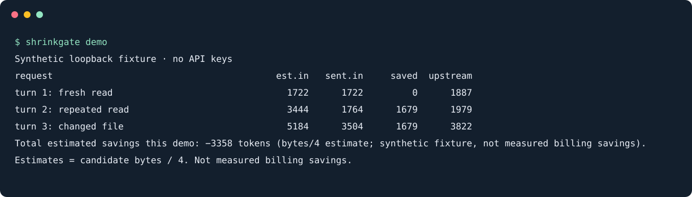

Stop sending identical
tool output twice.
Coding agents can include repeated file reads and compiler output in a single request. ShrinkGate trims earlier duplicates and keeps the latest identical copy intact.
Your coding agent → 127.0.0.1:18793 → Your model provider

Runs locally
No telemetry or extra account. Authentication is forwarded to your configured provider.
Tools first
User instructions, reasoning, system prompts and media are protected by default.
Measure it
Offline fixtures and JSON statistics make the transformation inspectable.
Inspect before connecting
cargo install --path . --locked # From the cloned source repo
shrinkgate demo
shrinkgate connect claude --dry-run
shrinkgate connect claude
shrinkgate doctor
shrinkgate stats --jsonClaude Code, Codex and OpenCode configuration helpers are included. Muse is experimental. New hardening features on main are unreleased; check the README for source and release installation options.
Smaller requests need honest measurements.
History replay alone creates no savings. Duplicates must exist in the current request. Rewriting can invalidate prompt caches or change model behavior. Local byte estimates are not measured billing savings. Compare cache usage, billed cost and task success on your own workloads.
Read the measurement methodology →Help make it dependable
Share a sanitized compatibility report, contribute a realistic fixture, or help validate installation on your platform.
Contributing guide →